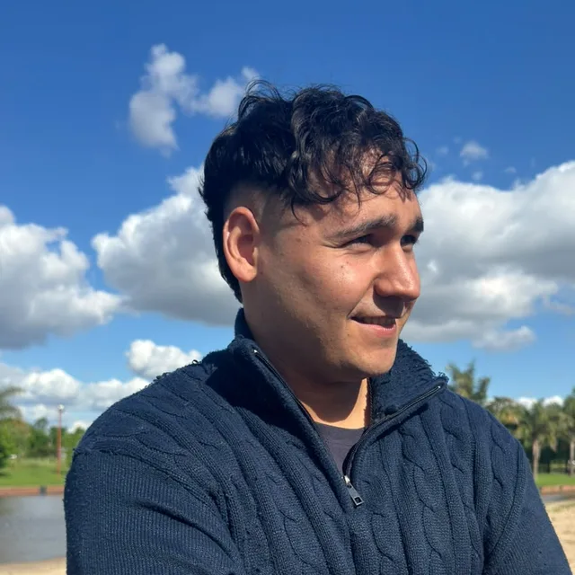
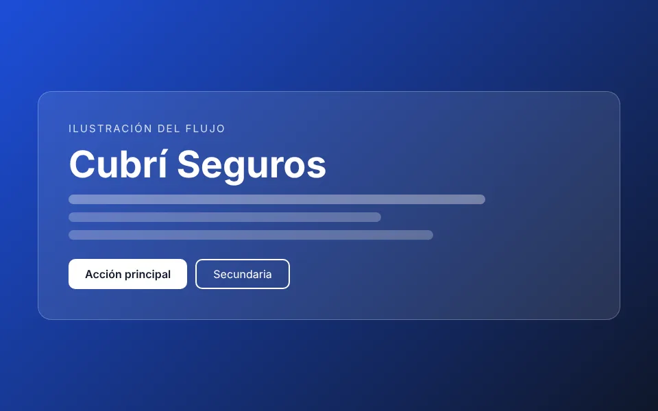
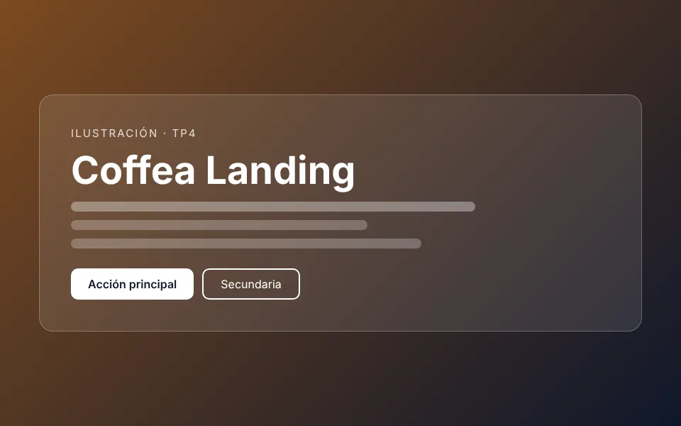
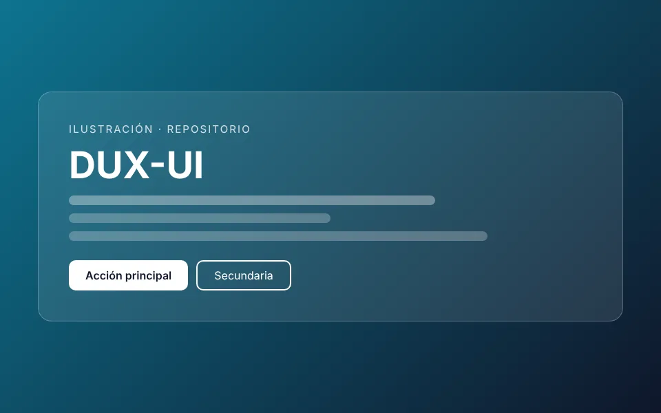

Diseño UX
Investigación de usuarios, proto-persona, benchmark, arquitectura de información, wireframes y test de usabilidad.
Sistemas de Información · UX/UI · Web
Estudiante de Sistemas de Información | Diseño UX/UI y Desarrollo Web. Diseño interfaces claras y accesibles, y las llevo a código HTML y CSS fiel al prototipo.

Skills
Investigación de usuarios, proto-persona, benchmark, arquitectura de información, wireframes y test de usabilidad.
Interfaces, componentes, sistemas visuales con tokens y diseño responsive mobile-first.
Maquetación semántica y versionado de código con Git y GitHub.
Proyectos

Sitio de contratación digital de seguros: elegir qué asegurar, cotizar y pagar online (TP5).

Landing de una sola página con 9 secciones, hecha en HTML5 y CSS3 sin JavaScript (TP4).

Repositorio que organiza mis trabajos académicos de Diseño UX-UI y desarrollo web.
Experiencia y formación
UADER · Facultad de Ciencia y Tecnología
UADER · sede Concepción del Uruguay
Sobre mí
Soy estudiante de Sistemas de Información en la UADER, en Concepción del Uruguay. Me interesa unir el diseño de experiencias con el desarrollo web: entender al usuario, prototipar y llevarlo a código.
Mi objetivo es seguir formándome en UX/UI y desarrollo web, y sumar experiencia en proyectos y prácticas. Me interesa especialmente el diseño de interfaces claras y accesibles, y trabajar con prototipos que se llevan a código.
Interfaces simples.
Diseño para todas las personas.
Probar y mejorar.
Opiniones
Me gustó cómo está organizado el portfolio, porque tiene una presentación clara y permite conocer rápidamente quién es Matías y qué hace. La sección de habilidades está bien dividida entre diseño UX, UI y desarrollo web. Como mejora, agregaría un poco más de información personal en la sección "Sobre mí" para conocer mejor sus intereses y objetivos.
Me pareció buena la organización de los proyectos, especialmente porque cada uno explica el problema que se buscó resolver y lo que se aprendió. También me gustó que el proyecto Cubrí Seguros tenga su propio caso de estudio. Como sugerencia, agregaría más imágenes del proceso de diseño para que sea más fácil entender cómo se desarrolló cada trabajo.
El portfolio tiene una estructura sencilla y las secciones están bien identificadas, lo que ayuda a encontrar la información. Me parece útil que tenga botones para ver los proyectos y acceder al contacto. Lo que mejoraría es la sección de contacto, porque todavía aparecen datos que dicen "reemplazar" en el correo y LinkedIn. Sería importante completar esos enlaces para que cualquier persona pueda comunicarse fácilmente.